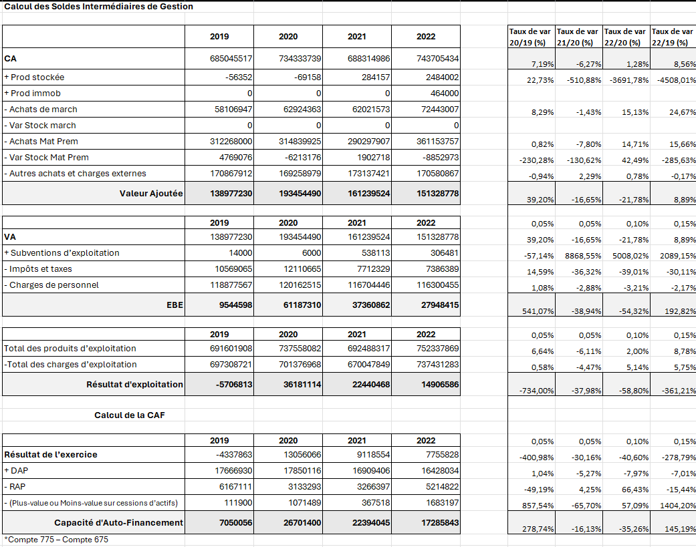
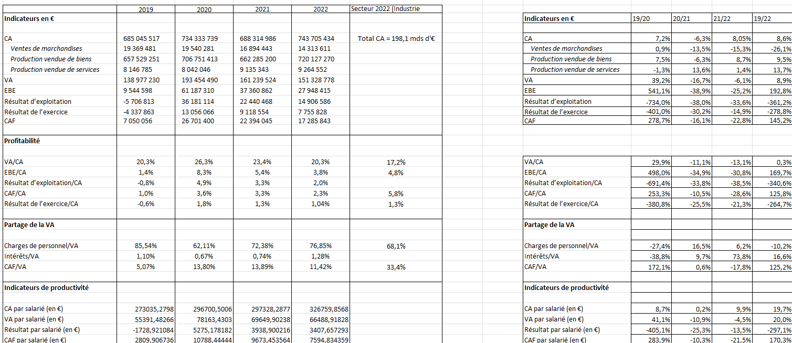
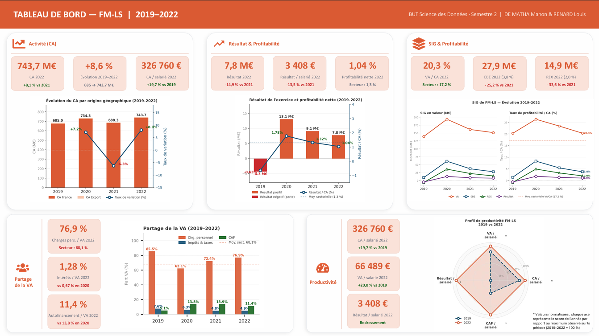

📊 SAÉ — Construction et présentation d'indicateurs de performance
Analyse de documents comptables de l'entreprise Fleury Michon afin d'en dégager des indicateurs de performance.
Les données sont partout, notamment dans la comptabilité. Or ce domaine a ses particularités. Ce projet avait pour but d'être une mise en pratique de ce que nous avions appris tout au long de l'année afin d'être capables de réaliser une analyse comptable d'une entreprise à partir de ses données.
Nous disposions de données sur l'entreprise Fleury Michon. Nous avons, par binôme, calculé des indicateurs comptables (Soldes Intermédiaires de Gestion, indicateurs relatifs de comparaison, etc.). Cella fait nous avons produit une analyse de ces différentes valeurs, ainsi que de l'évolution des données dans le temps. Le rendu final était un rapport rédigé, s'appuyant sur les données calculées et commentées. De plus, nous devions rendre un tableau de bord montrant la situation et l'évolution de l'entreprise. Vous pouvez les consulter dans les illustrations.
La principale difficulté a été de comprendre et d'interpréter dans le contexte métier les indicateurs comptables calculés, afin de produire une analyse pertinente de ces valeurs.



- Habileté sur Excel.
- Compréhension de l'importance des indicateurs comptables.
- Capacité à comprendre et analyser des données d'entreprise.
- Création d'une charte graphique pertinente.
- Création d'une infographie sur mesure et professionnelle.
- Respect du temps imparti.
- Capacité à manipuler des données comptables.
- Travail d'équipe.
- Habitude à structurer un travail.
Correctement interpréter et prendre en compte le besoin du commanditaire ou du client.
Parmi les apprentissages critiques (éléments à maîtriser dans la formation, à dimension très académique), je pense que ce projet correspond le mieux à celui cité ci-dessus. Calculer des valeurs, des taux ou même faire des graphiques est une chose, mais choisir les bons indicateurs, correctement interpréter les taux et réaliser des graphiques pertinents n'est possible que si l'on comprend correctement le besoin. L'objectif ici était d'analyser la situation pour Fleury Michon ; le résultat aurait été bien différent dans le cadre d'une analyse pour une banque ou un autre acteur extérieur.